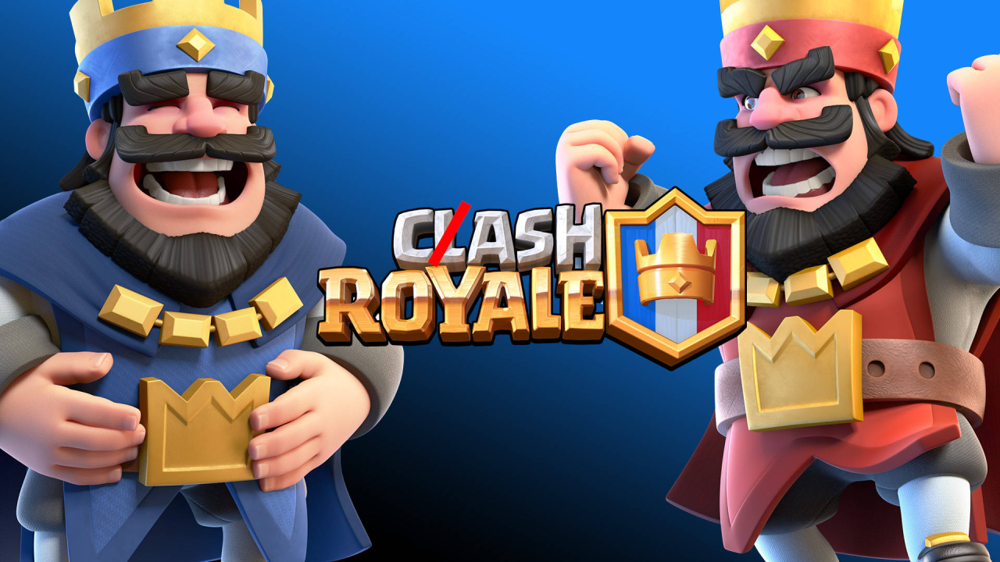

Cash Royale: How Over-Monetization Cancels Magic

Prologue
My eleven-year-old son recently began playing the mobile real-time strategy collectible card game Clash Royale, and I fully support it. We talk strategy every day, and I’ll even play a Friendly Battle with him now and again. He is part of a Clan of real-life friends and is truly enjoying the lore, strategy, and his experience. But seeing him get into the game brought back some memories about what ultimately broke my clan apart and led to the end of my love for the game.
Connection Royale
There was a moment when Clash Royale didn’t feel like a game at all, but a place where human connection slipped through the cracks of competition, making it something more human, not less. It wasn’t just a game. It was a place of joy, connection, and a sense of mastery. Unlocking a Legendary card wasn’t about power. It was about possibility. I remember the thrill of sharing replays with my Clan, the intensity of a perfectly timed counterpush, and the satisfaction of winning a match with one second left. I purchased Pass Royale many times. I proudly displayed my Mini P.E.K.K.A. figurine and Royal Log plushie that I received when I attended the real-life CRL World Championship on my file cabinet. It stopped feeling like casual play and became something we returned to for each other. It lived inside what philosopher Johan Huizinga called the magic circle, a consecrated space where reality pauses, and a new world with its own rules takes over.
The Circle Breaks
The Clan I was a part of held on for as long as we could, but bit by bit, everyone began to feel like Clash Royale was less like a fun game with friends and more like a blatant cash grab. Systems like Evolution Shards and Elite cards made meaningful progress almost impossible without paying. These changes didn’t just tweak the meta. They replaced trust with transaction. The arena became a checkout aisle. And the magic, the sacred, temporary world where fairness and skill defined reality, was broken.
The Golden Loop
At its height, Clash Royale was a marvel of design. Its three-minute matches, eight-card decks, and razor-sharp balance made it addictive in the best way. The Clan system didn’t just create social features. It created social meaning. We weren’t grinding. We were cooperating. We were planning. We were showing up for each other. We were more than usernames. We were friends. We donated cards, shared replays, and coordinated for Clan Wars. We spectated each other’s battles, offered advice, and celebrated clever plays. We held Clan tournaments, joked in chat, and celebrated personal milestones. It gave us all a real sense of belonging. There was friction, but it was the good kind. The kind that made wins matter. The kind that made a game feel alive.
Back then, the developers respected players. You could spend money, but you didn’t have to. The loop was tight. Rewards made sense. Winning felt earned. Losing felt like a lesson. Time invested brought improvement. You could be proud of what you built.
The Social Contract
A game’s social contract is the implicit agreement between the player and the game that they are playing will be fair, meaningful, and enjoyable. Where effort, skill, and time are respected and rewarded. When this contract is upheld, players feel trust and motivation. When the contract is ignored (through unfair monetization, opaque mechanics, or punishing progression), trust erodes and engagement drops. The social contract in Clash Royale became one-sided. Skill was no longer the most important aspect of the game, overshadowed by monetization as the new priority. The Evolution system offered powerful new card abilities, but only if you collect six Evolution Shards, items you mostly get through paid paths. Free players grinded, while cash payers excelled.
It’s not just about fairness, though. It’s about what this model does to our sense of meaning. In game design, there’s something called the core loop. It’s the repeated actions and mechanics that give a game its rhythm and context. As mentioned, Clash Royale used to have one of the cleanest loops in mobile gaming. But loops rot if they’re not nurtured. The game started punishing experimentation. Matchmaking felt rigged. Progression was ambiguous. All of the hints pointed to money as the missing ingredient. You weren’t stuck because you needed to play better. You were stuck because you needed to pay more.
No Cash, No Clans
As a longtime UX practitioner, this is more than frustrating. It is demoralizing. When systems no longer respect the user, trust erodes. When trust erodes, people stop showing up. This isn’t just a gameplay issue. It’s a human one. Games are culture. And monetization at this scale, with this disregard, is cultural damage. I saw it firsthand. My Clan used to be a fairly regular community, logging in more than once a day, even if just to share a joke in the Chat. Then people stopped showing up. It wasn’t just us either. Monthly active users dropped from around 45 million in 2020 to roughly 35 million by 2023. The game stopped giving us reasons to care. Eventually, our Clan was disbanded. Other groups followed. When a game turns its community into customers, the community stops existing.
A Hollow Thrill
Yet, the game is not dead. Millions still play. And many still pay. Others push through, hoping the grind results in a Lucky Chest. That’s why these practices will never be completely reversed. At the very least, Supercell continues to introduce clever mechanics in Clash Royale. Merge tactics have brought back a bit of the old thrill, as have several newer game modes. And, to be fair, over-monetization issues from a few years ago have been partially addressed. But for many of us, it’s like visiting a hometown overrun with souvenir shops. Familiar streets without a soul. I sometimes log in, especially when my son wants to play. I still own my Evolutions. But the magic is gone.
Finding New Circles
Warcraft Rumble gave me some of that old feeling back, although the community aspect is much thinner. It shares some similar mechanics with Clash Royale, but its focus on PvE and deck diversity makes it feel richer, more deliberate, and less pressured. It’s not perfect. But it doesn’t insult me. It lets me play, experiment, and explore without a price tag dangling off every button. For now, it’s my new magic circle.
Play and Humanity
Huizinga defined play as a meaningful act within its own space and rules. He argued that play is older than culture, but also foundational to it. When games forget this, when they import the logic of profit into a place that should be protected, they cancel something essential. Not just the game. The invitation. The contract. The joy. Today, Clash Royale feels like a memory with a price tag. I still respect what it was. But what it has become is a cautionary tale. When the magic circle fades, it doesn’t just mark the end of a game. It marks the loss of something more human. It hearkens to the forfeiture of our innate ability to play together, fairly, for the joy of it alone.
Page formatted by Written & Formatted. © Tim Samoff.